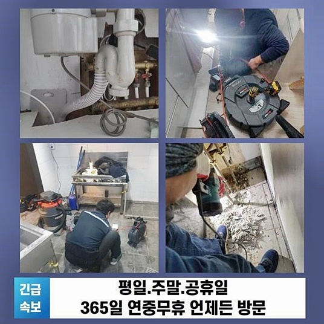
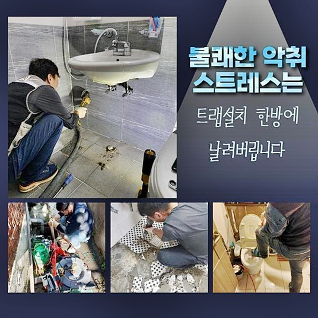
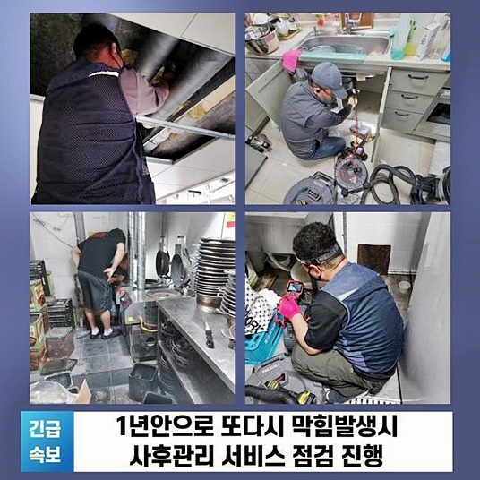
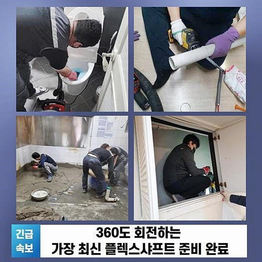
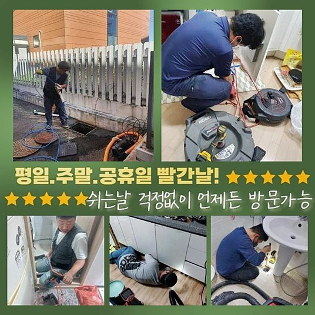
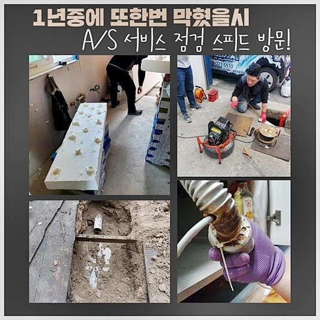
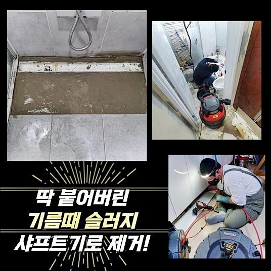

🏠 서초구 잠원동화장실막힘 염곡동 배수구뚫기 배관뚫는업체
용인시 처인구 배관막힘 전문 시공 후기

📋 작업 개요
- 위치: 용인시 처인구, 수원시 영통구, 화성시 동탄
- 서비스 유형: 배관막힘, 고압세척, 내시경점검
- 작업 일시:
- 업체명: 하수구수사대 (010-5615-2118)
🔍 문제 상황
서초구 잠원동화장실막힘 염곡동 배수구뚫기 배관뚫는업체
찾아뵈었던 사례는 음식점을 영위하고 있는 고객님이 다급한 목소리로 연락하셨는데요
음식점을 운영해오다가 역류까지 발생해 저희의 전문가들을 불렀죠
1시간내로 방문을 드렸더니 하수관에서는 오수들이 역류해버린 상황이였습니다
육가를 개봉해 관찰하니 그 양상은 좋지 못했습니다
집수시설로 빠져야될 배수 라인에 오염물과 기름기들이 뒤엉켜 출수구부분을 막은채로 있었습니다
1차적으로 석션기기로 부유하는 이물들을 흡입시켜 앞으로 있을 청소들의 기초들을 잡았는데요
석션들로 초입부에 잔해물의 경우에는 제거되었으나 각각의 라인에 고착된 굳어버린 고착물과 벽쪽에 있는 기름성분을 없애주어야만 했죠
그렇기때문에 샤프트도구를 가용시켜 다음 방향을 정했죠
이용했던 기계인 석션은 잔해물을 청소하는 역할들을 맡고있고 다음으로 이용되는 것은 샤프트장치로 고착물들을 청소시키기위한 장비랍니다

🔎 원인 분석
💡 전문가 진단: 정밀 진단 장비를 사용하여 슬러지의 고착 여부를 판명하고 타격/세척 작업을 실시했습니다.
이러한 장비들은 무분별하게 작동시키기에는 전문적인 능력이 결여되어있다면 운용을 해주는게 불가능하겠습니다
주의하여 실시되지 않으면 관로에 또다른 문제를 불러일으켜 부차적인 증상이 생기게됩니다
그렇기에 전문성을 쓰는 전문진의 작업들이 필요합니다
샤프트장치로 딱딱해진 이물들을 조금씩 분쇄시키며 청소를 진행시켰습니다
예상외로 깊숙히 잔존해있어서 시간들이 늦춰진 장소입니다
고객분은 음식점을 오래전에 여셨다고 설명해주셨는데 이제껏 문제없이 사용해서 이러한 문제들은 따로 신경쓰지 못한것 같다 말씀하셨는데요
보통 수도시설을 쓸 때 막히는 문제들은 자주 발생되는것이 아니므로 중한 문제라고 다루지않는 의뢰자도 많으십니다
그렇지만 별거 아니라 판단한 끝에 해결을 하지않으면 금전부분에서도 손해를 앞당기게되요
그러니 사용하는 의뢰인분들의 선에서 관리책 실시가 필요할테죠
현장으로 돌아와 샤프트도구로 끝부분까지 투입한 후 말끔하게 청소해주고 정리되고나서 처음에 가용했던 석션 장비를 사용하여 탈락된 잔여물을 깨끗히 제거시켰습니다
저희업체는 진단 시 청소하는 때 종료되었을 때에 항상 내시경을 이용하여 고객분에게 수리한 과정들과 결과까지 공개하고 있습니다

🔧 작업 과정
작업 시에 군더더기 없이 이행해야 고객분도 믿음이 가고 저희들도 꼭 확인해야하기에 반드시 이행하는 사항이죠
방문드린 장소의 난이도들은 쉽지 않았으나 사태들을 볼땐 제대로 해결되었어요
고객분에게 관리할 수 있는 방법도 말씀드렸어요
말씀드렸었던 내용들처럼 막혀버린 상황에서 해결을 꾀하지 않는다면 좋지못한 사태들을 생겨나게 하므로 전문업체와 해결해보세요!
의뢰인께서 설명하신대로 해당 문제에 있어서 시작 단계에서는 간소한 문제로 생각하실 수 있겠으나 방치한다면 예상못한 때에 골치아픈 일이라 우리 앞에 나타날거에요
그래서 조리과정에 제약이 생기고 심지어 조리공간의 중요사안인 보건이슈로도 이어지게되요
그래서 주기적인 진단을 요청하셔서 피해를 앞서서 조치하는게 우선입니다
더욱이 음식점과 같이 다중이용시설은 위생과 관련한 사안이 매우 중요하겠습니다
조리공간 라인의 막혀버린 사태는 식당자체의 종합적인 위생에도 영향을 미치며, 고객의 인식에도 스크래치를 발생케해요
물사용이 많다면 귀찮으시더라도 고객분들이 철저히 관리하는게 필요하겠습니다
이처럼 하면 갑작스러운 증상으로 불미스러운 일을 피하고 최고의 하수구를 지속할 수 있어요
전문진의 조치로 하수관을 면밀히 파악하고, 적절한 대처들을 받아보시게 됩니다
더 나아가 세척 완료 시에는 또 막히는 일 없게 내시경기기로 체크해보고 해당 절차에서도 고객께서도 체크해봅니다
그래서 배수장애 시 전문업체를 불러 확실한 방법으로 잠재우는것이 최선이죠
오랜기간에 걸쳐 해결을 늦추면 공동관로에까지 증상이 전가될 수 있어요
중앙하수관이 막혀버리면 큰 시공이 필요하며 오래도록 물들을 쓰는게 어렵고 과중된 지출이 생겨납니다


✅ 작업 완료
청소가 여의치않거나 찌꺼기들이 빈번하게 누적되는 구조라면 검수를 행해보세요!
가벼운 증상은 신속하게 완화시킬 수 있는 까닭입니다
배수 관련 사안은 전문인에게 맡겨주시는 것이 필요하겠습니다
가정에서 하수구가 막힐 시 일상을 영위하는게 힘들게되고 심할 경우 악취들이 올라와 추가적인 고충도 신경써야 합니다
배수상황이 좋지못하면 조속히 대응을 실시해야되니 저희들에게 상담을 진행해보세요!




⚠️ 하수구 배관 막힘 예방 및 관리 가이드
- ✅ 머리카락, 비닐, 물티슈 등 물에 분해되지 않는 이물질은 절대 흘려보내지 마세요.
- ✅ 기름기 많은 식기는 설거지 전 키친타올로 먼저 기름때를 닦아내세요.
- ✅ 주기적으로 배수구에 뜨거운 물을 가득 부어주어 유지방 고착을 방지하세요.
- ✅ 작업 후 1년 이내 재발 시 무상 A/S 보증 서비스를 제공합니다.
💡 핵심 정리
- 확실한 장비 작업(내시경 점검 및 샤프트 스케일링)으로 원인을 뿌리 뽑습니다.
- 작업 후 1년 이내에 동일한 부위 재발 시 100% 무상 A/S 서비스를 보장합니다.
- 서울 · 경기 · 인천 전 지역에 24시간 언제든 긴급 출동할 수 있도록 항시 대기 중입니다.
❓ 자주 묻는 질문 (FAQ)
🚨 용인시 처인구 배관막힘 문제로 고민이신가요?
정확한 원인 진단과 확실한 시공으로 재발 없는 해결을 약속드립니다.
24시간 긴급 출동 | 서울 · 경기 · 인천 전지역 | 1년 내 재발 시 무상 A/S